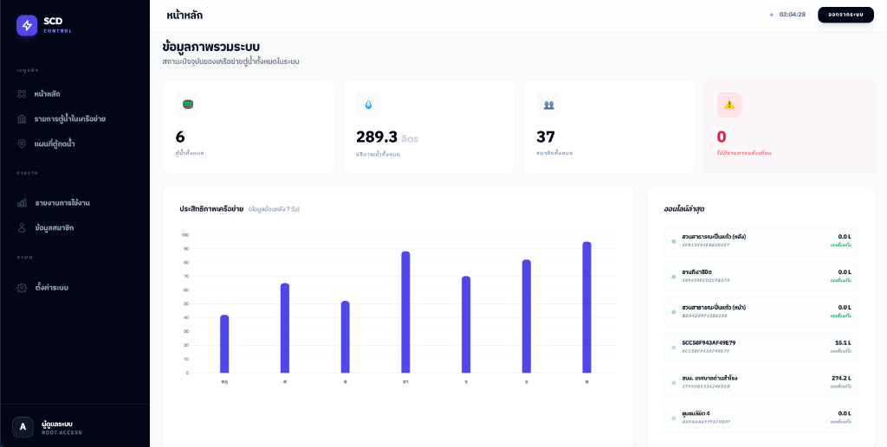
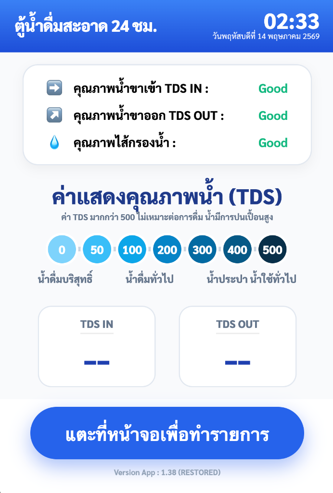
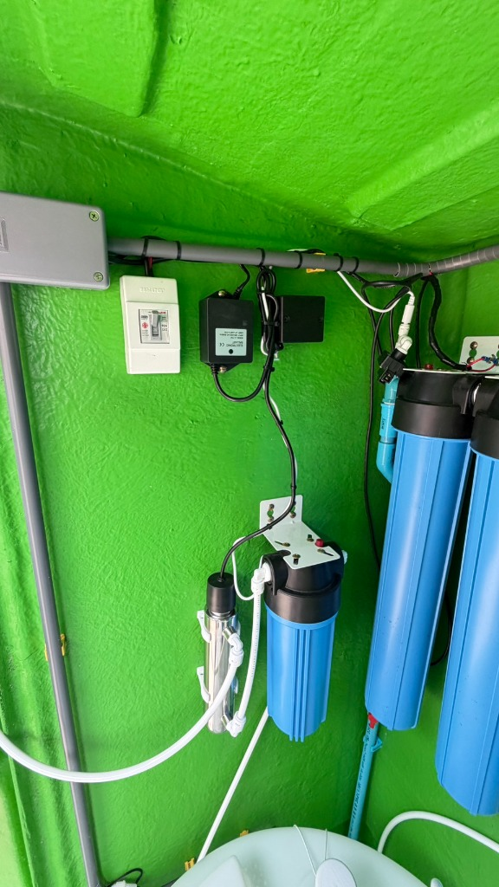
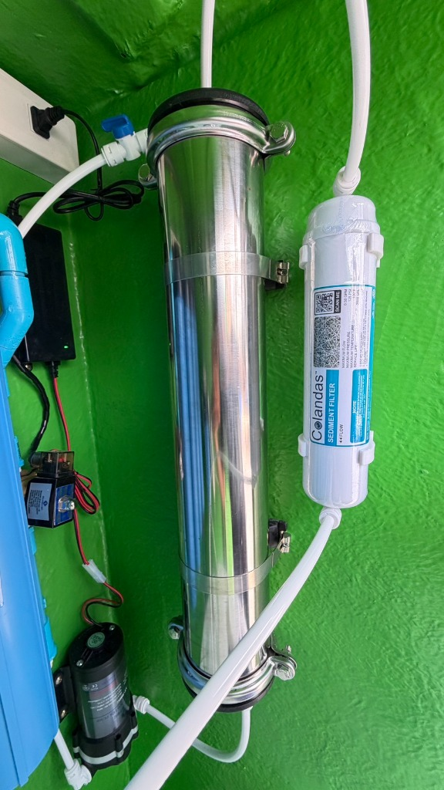
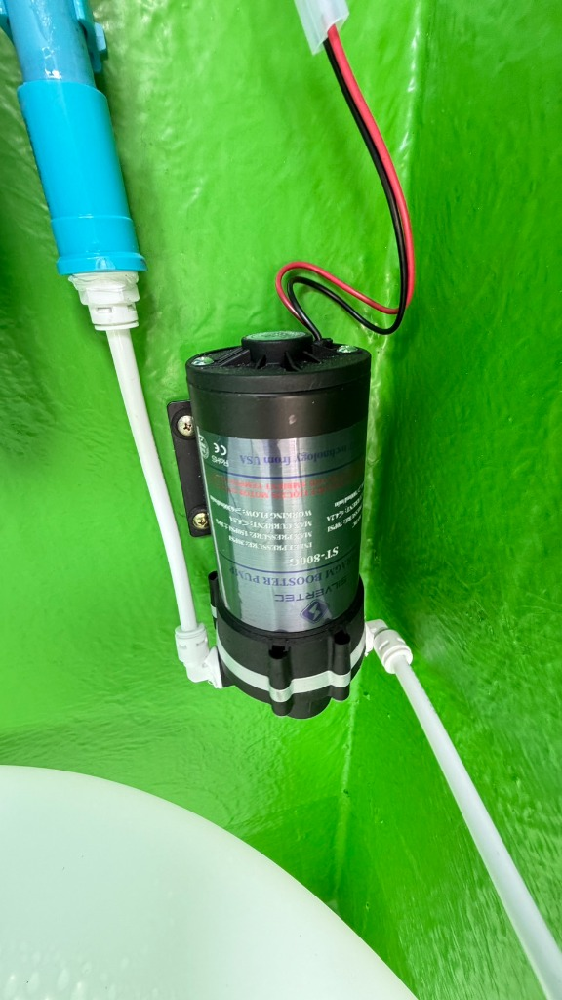
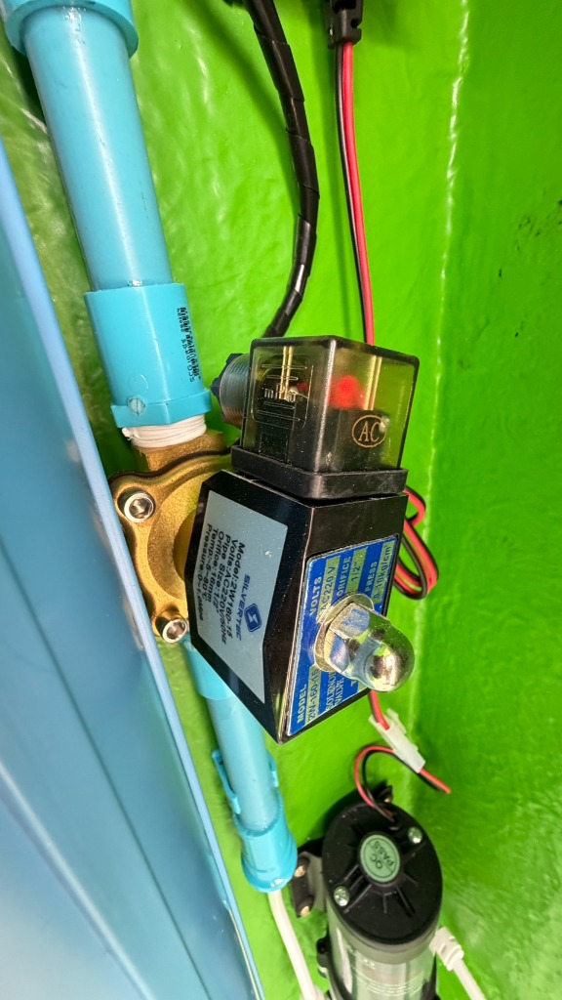
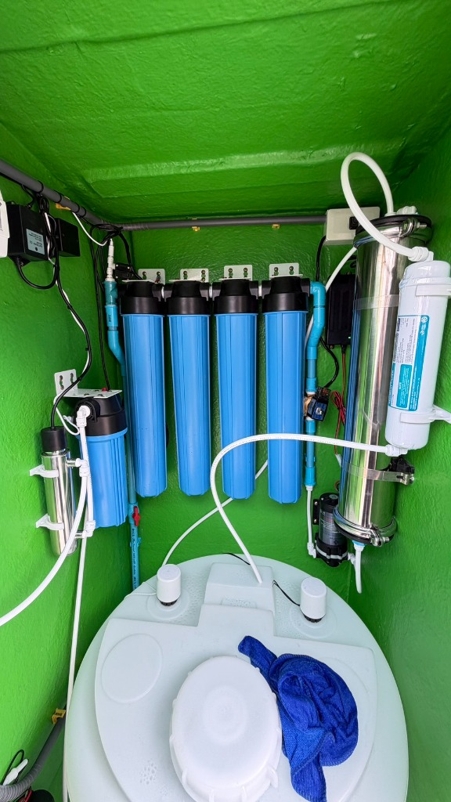
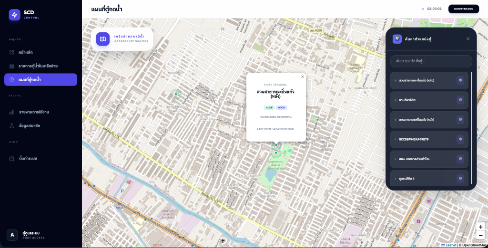
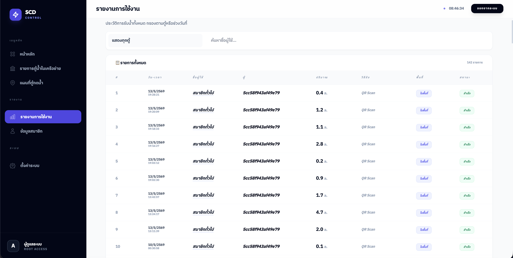

ระบบบริการน้ำดื่มสะอาดฟรี AQUA STATION
นวัตกรรมการจัดการโควตาน้ำดื่มอัจฉริยะผ่านระบบ IoT และ LINE OA เพื่อสุขภาพที่ดีของประชาชน และการพัฒนาชุมชนสู่เป้าหมาย Smart City
ภาพรวมโครงการ และ วัตถุประสงค์
บริการน้ำดื่มสะอาดฟรีแบบครอบคลุม
มุ่งช่วยเหลือประชาชนในท้องถิ่นเพื่อลดรายจ่ายและค่าครองชีพ โดยการให้บริการตู้น้ำดื่มระบบกรองความละเอียดสูงฟรี ผ่านระบบควบคุม IoT ท้องถิ่น
เป็นมิตรต่อสิ่งแวดล้อมอย่างยั่งยืน
สนับสนุนการลดขยะพลาสติกที่ใช้ครั้งเดียวทิ้ง (Single-use Plastic) โดยกระตุ้นให้ประชาชนพกพาภาชนะส่วนตัวมาเติมน้ำดื่มที่ได้มาตรฐานความสะอาดสูง
ระบบควบคุมสิทธิ์และทรัพยากรส่วนกลาง
หมดห่วงเรื่องการแย่งใช้ทรัพยากรด้วยระบบ **Quota Limit** ที่จำกัดการรับน้ำรายบุคคลต่อวัน โดยปรับตั้งค่าโควตาสำหรับคนในพื้นที่และคนต่างถิ่นผ่านระบบคลาวด์

ช่องทางการ ยืนยันตัวตน เพื่อรับน้ำดื่ม
1. ระบบ LINE OA & LIFF App (เมนูดิจิทัล)
สะดวกและเร็วที่สุด! ลงทะเบียนผ่าน LINE OA เพื่อสร้างบัญชีสมาชิก จากนั้นเปิดเมนู "สแกนรับน้ำ" เล็งกล้องไปที่หน้าจอเพื่อรับสิทธิ์น้ำฟรีทันที พร้อมรับข้อความสรุปปริมาณที่กดจริงแจ้งเตือนหลังเสร็จสิ้น
2. บัตรประจำตัวประชาชน (Smart Card Reader)
ตอบโจทย์กลุ่มผู้สูงวัยหรือผู้ไม่มีสมาร์ตโฟน! แตะปุ่ม "เสียบบัตรประชาชน" ที่หน้าจอ และเสียบบัตรเข้าช่องอ่านเพื่อยืนยันตัวตนเช็กฐานทะเบียนราษฎร์ในการรับสิทธิ์โควตาทันที
3. หมายเลขโทรศัพท์ที่ลงทะเบียนไว้
ทางเลือกสำรอง! กดเบอร์โทรศัพท์ที่ลงทะเบียนไว้ผ่านปุ่มแป้นพิมพ์จำลองบนหน้าจอ Kiosk เพื่อเข้าใช้โควตาได้อย่างง่ายดาย


ประสบการณ์การใช้งาน ที่หน้าตู้ Kiosk


ระบบผลิตน้ำดื่มสะอาดประสิทธิภาพสูง RO & UV
มาตรฐานรับรองการกรองระดับสากล
เครื่องกรองน้ำได้รับมาตรฐานผลิตภัณฑ์อุตสาหกรรมไทย ได้แก่ มอก. 2392-2551 และ มอก. 1420-2551 รวมถึงมาตรฐานสากลด้านความปลอดภัยน้ำดื่ม NSF / ANSI / WQA
กำลังการผลิตอุตสาหกรรมขนาดย่อม
สามารถกรองน้ำสะอาดได้สูงสุดไม่เกิน 200 ลิตรต่อชั่วโมง หรือคิดเป็นกำลังการผลิตสูงถึง 4,800 ลิตรต่อวัน เพียงพอต่อความต้องการคนในพื้นที่
กระบวนการกรองอัจฉริยะ 7 ขั้นตอน


ความปลอดภัยทางวิศวกรรม และชิ้นส่วนควบคุม
ปั๊มเพิ่มแรงดันเกรดอุตสาหกรรม (Booster Pump)
ใช้ปั๊มเพิ่มแรงดันแบรนด์ Silvertec ST-800G Diaphragm Booster Pump (เทคโนโลยีนำเข้าจากอเมริกา) เพื่อสร้างแรงขับเคลื่อนสูงพิเศษ ดันน้ำดิบเข้าสู่ไส้กรอง RO Membrane ขนาด 0.0001 ไมครอน ได้อย่างเสถียรและทำงานเงียบ
โซลินอยด์วาล์วอัจฉริยะ (Solenoid Control)
วาล์วควบคุมการเปิด-ปิดจ่ายน้ำสะอาดด้วยไฟฟ้าแรงดันต่ำ Silvertec 2W160-15 (AC220V/50Hz) ควบคุมการเริ่มไหลและหยุดทันทีผ่านบอร์ดไมโครคอนโทรลเลอร์ ป้องกันการรั่วซึมและการจ่ายน้ำล้นเกินปริมาณกำหนดได้อย่างสมบูรณ์
ระบบ UVC Sterilizer และฟังก์ชันตัดไฟอัตโนมัติ
กระบอกหลอดแก้วยูวีฆ่าเชื้อโรคแบบต่อตรงก่อนทางออกจ่ายน้ำ (UVC Sterilization) ทำงานอัตโนมัติประสานสัมพันธ์กับเซอร์กิตเบรกเกอร์ป้องกันไฟรั่ว/กระแสเกิน (RCBO) เพื่อความปลอดภัยสูงสุดของผู้มาใช้บริการกดน้ำสะอาด



ระบบมอนิเตอร์เครือข่ายและ แผนที่ตู้น้ำส่วนกลาง
Geographic Telemetry Map (ระบบติดตามพิกัดตู้)
ผู้ดูแลระบบส่วนกลางของเทศบาลสามารถมอนิเตอร์หาพิกัดตำแหน่งตู้ทั้งหมดในเครือข่าย เช่น สถานะจุดให้บริการที่ "สวนสาธารณะปิ่นแก้ว (หลัง)" ได้ในรูปแบบเรียลไทม์ ตรวจดูค่าเซ็นเซอร์ว่าตู้ยังมีสถานะทำงานปกติหรือไม่ (ALIVE / GOOD)
IoT Central Dashboard (แดชบอร์ดสถิติ)
แสดงยอดสรุปภาพรวมทั้งหมดของสถานะระบบ ได้แก่ จำนวนตู้ที่กำลังใช้งานจริง, ปริมาณการจ่ายน้ำเป้าหมายสะสมรายลิตร, จำนวนสมาชิกที่ลงทะเบียนใช้งาน และระบบแจ้งเตือนฉุกเฉิน (Warning Alerts) พร้อมกราฟวิเคราะห์ยอดการรับน้ำรายวันในรอบสัปดาห์
สถานะความพร้อมอุปกรณ์ (Live Hardware Health)
ตรวจสอบปริมาณความจุตัวกรองคงเหลือ (เช่น FILTER: 3000L REMAINING) เพื่อให้ช่างบำรุงรักษาเข้าเปลี่ยนไส้กรองรอบใหม่ล่วงหน้าได้อย่างมีประสิทธิภาพ

การจัดการผู้ใช้งาน และ ตั้งค่าสิทธิพิเศษน้ำดื่ม
การแบ่งกลุ่มสิทธิพิเศษน้ำดื่มตามทะเบียนบ้าน
ระบบรองรับการจำกัดโควตาการรับน้ำดื่มฟรีรายวันเพื่อความเท่าเทียม โดยผู้ดูแลระบบของเทศบาลสามารถตั้งค่าแบ่งปริมาณน้ำต่อคนต่อวันออกเป็น:
ระบบจัดการพื้นที่ยืดหยุ่น (Area Segmentation)
ผู้ดูแลระบบส่วนกลาง (SCD ROOT ACCESS) สามารถเพิ่มเขตพื้นที่ใหม่ๆ ในการให้สิทธิ์ เช่น การเลือกเพิ่มรายจังหวัด อำเภอ ตำบล (เช่น อำเภอหัวหิน, ตำบลสำโรงเหนือ, จังหวัดสมุทรปราการ) ได้อย่างง่ายดายและบันทึกการตั้งค่าซิงค์ข้อมูลผ่าน OTA ทันที
การบริหารข้อมูลสมาชิกและประวัติ (Audit Logs)
สามารถเรียกดูข้อมูลรายชื่อสมาชิก เบอร์โทรศัพท์ ประวัติการรับน้ำจริงย้อนหลัง วันเวลาและพิกัดตู้ที่ไปกดใช้งาน เพื่อนำมาวิเคราะห์แนวโน้มการใช้น้ำสะอาดในแต่ละจุด


บทสรุปคุณค่าและการพัฒนา เพื่อความยั่งยืน
ประโยชน์สูงสุดต่อสังคม ชุมชน และสิ่งแวดล้อม
การรวมตัวของวิศวกรรมการผลิตน้ำสะอาดขั้นสูง (RO + UV) ระบบควบคุมอัตโนมัติ (IoT Kiosk) และคลาวด์แดชบอร์ดส่วนกลาง ก่อให้เกิดประโยชน์เป็นรูปธรรม:
ขอขอบคุณความร่วมมือการพัฒนา
โครงการระบบบริการน้ำดื่มสะอาดอัจฉริยะนำร่องเพื่อชุมชน
เทศบาลนครหัวหิน | พัฒนาระบบโดย ทีมวิศวกร Siam Circuit